Home
本示例展示了如何使用颜色阈值器(Color Thresholder)应用程序分割图像并创建二值蒙版图像。该示例根据颜色值从背景（紫色布料）中分割前景（辣椒）。
在颜色阈值器应用程序中，图像分割可以是一个迭代过程。例如，尝试在应用程序支持的多个颜色空间中分割图像，因为一个颜色空间可能比另一种更好地隔离特定颜色。在任何受支持的色彩空间中，您最初都可以通过在前景或背景中选择一个区域来执行自动分割。然后，您可以使用应用程序提供的颜色分量控件来细化分割。
本示例的最后一部分展示了如何保存您的工作结果、创建蒙版图像以及获取应用程序用于执行分割的 MATLAB 代码。
在颜色阈值器应用中打开图像
将彩色图像读入工作区。
rgb = imread('peppers.png');
从 MATLAB 工具条中打开颜色阈值器应用。在应用程序选项卡上的图像处理和计算机视觉部分，单击 Color Thresholder

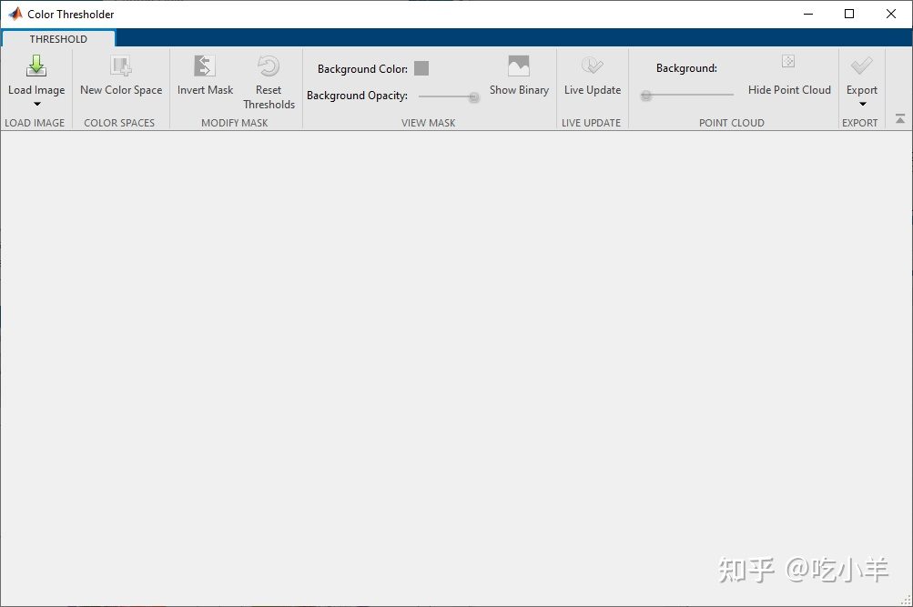
将图像加载到颜色阈值器应用程序中。单击加载图像，然后选择从工作区加载图像。在从工作区导入对话框中，从工作区中选择图像，然后单击确定。
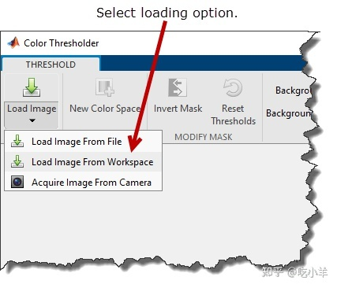
您还可以使用colorThresholder函数从命令行打开应用程序，指定图像的名称：colorThresholder(rgb);。 颜色阈值器应用程序将在选择一个颜色空间选项卡中显示图像，表示为在以下色彩空间中的图像点云：RGB，HSV，YCbCr和Lab表。对于基于颜色的分割，选择提供最佳颜色分离的颜色空间。使用鼠标旋转点云，以查看它们如何隔离各个颜色。使用颜色阈值器应用程序进行分割可以是一个迭代过程 - 在您实现满足您需求的分割之前尝试几种不同的颜色空间。对于此示例，通过选择 YCbCr 颜色空间开始该过程。
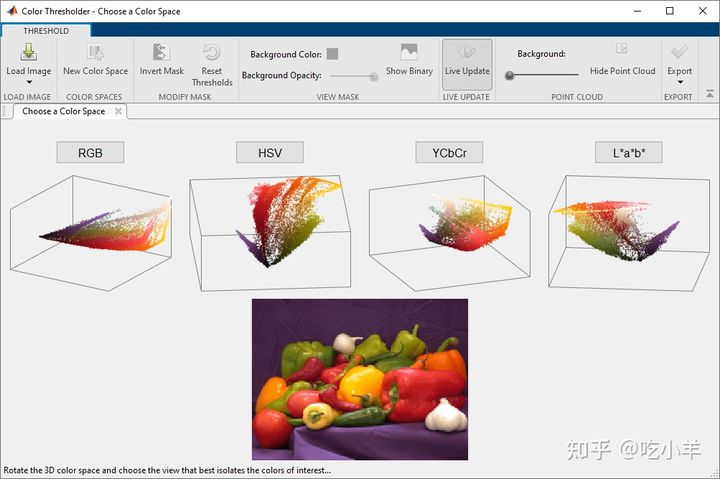
在颜色阈值器应用程序中分割 YCbCr 图像
当您选择色彩空间时，应用程序会打开一个新选项卡，显示图像以及每个颜色分量控件和点云。颜色控制因颜色空间而异。对于 YCbCr 颜色空间，颜色阈值器应用程序显示三个直方图，代表三个颜色分量：Y分量代表亮度，Cb分量代表蓝黄光谱，Cr分量代表红绿光谱。
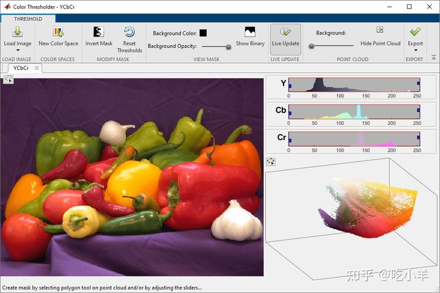
要浏览图像，请将光标移到图像上以访问平移和缩放控件。
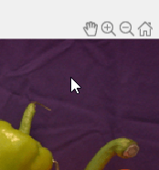
自动阈值
首先，使用自动阈值分割图像。由于背景颜色（紫色布料）接近于统一颜色，因此对其进行分割，而不是对前景对象（辣椒）进行分割。您可以稍后使用“反转蒙版”选项反转蒙版。
使用手绘 ROI 工具定义一个区域。点击按钮

在图像的左上角并在背景上绘制一个 ROI。您可以绘制多个区域。
绘制区域后，颜色阈值器应用程序会根据您在绘制区域中选择的颜色自动对图像进行阈值处理。Y，Cb，和Cr的色彩控制改变并会反映在分割效果上。这种自动阈值处理不会创建背景和前景的清晰分割，尤其是在前景和背景之间的下边界处。对于此示例，图像底部附近的背景颜色较浅。如果要删除已绘制的区域并重新开始，请右键单击该区域的任意位置并选择删除手绘。
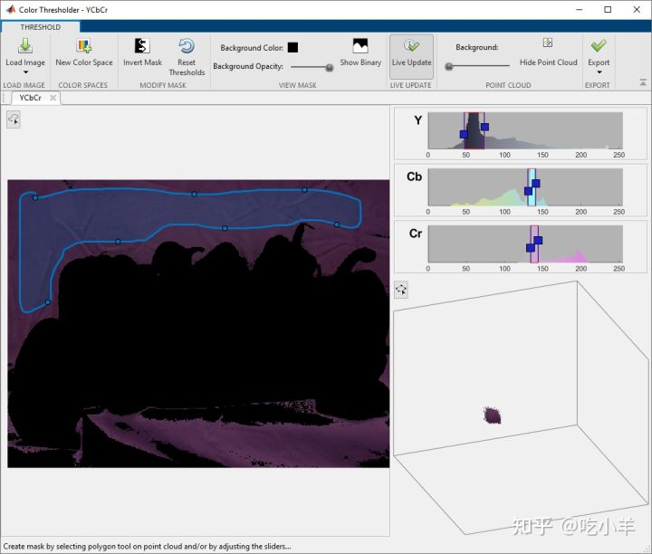
使用颜色控制优化自动阈值
要微调自动阈值，请使用颜色控件。对于每个Y、Cb和Cr颜色控件，您可以通过拖动该直方图中的下限和上限来设置值的范围。使用这些颜色控件，您可以显着改善前景的分割。
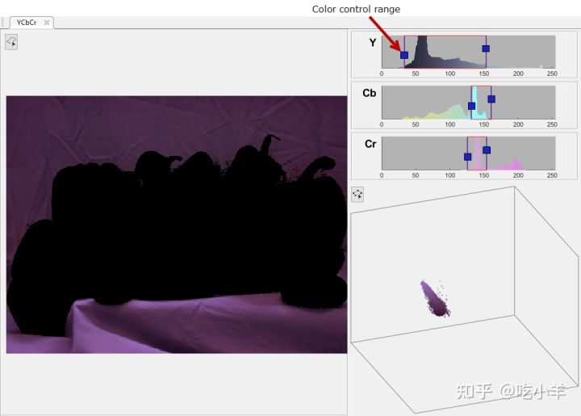
使用点云的设置图像颜色阈值
在 YCbCr 颜色空间中分割图像的另一种方法是在点云上绘制 ROI 以选择一系列颜色。
在应用程序工具条上，单击重置阈值以恢复到原始图像。在应用程序的右下窗格中，单击并拖动点云以进行旋转，直到隔离出您对阈值处理感兴趣的颜色的视图。点击
点云左上角的按钮。颜色阈值器应用中的3-D点云转换成2-D表示，并激活多边形ROI工具。在要分割的颜色（紫色）周围绘制一个 ROI。这种方法可以创建比初始自动阈值方法更好的分割。
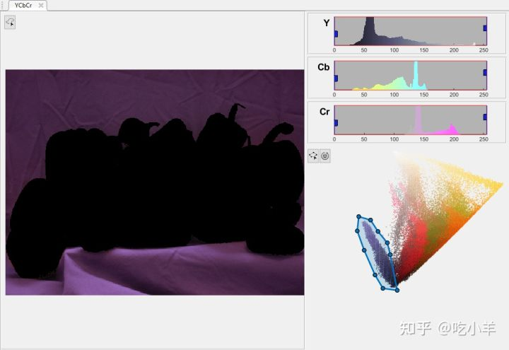
在另一个颜色空间中分割图像
要在另一个颜色空间中分割图像，请单击应用程序工具条中的“新建颜色空间”。在选择颜色空间选项卡中，选择 HSV 颜色空间。
颜色阈值器应用程序创建新的选项卡显示的图像和用于HSV颜色空间的色彩分量控件。在这个色彩空间中，H代表色调，S代表饱和度，V代表数值。HSV 颜色空间对H分量使用双向旋钮，对S和V分量使用两个直方图滑块。该选项卡还包含图像中颜色的点云表示。
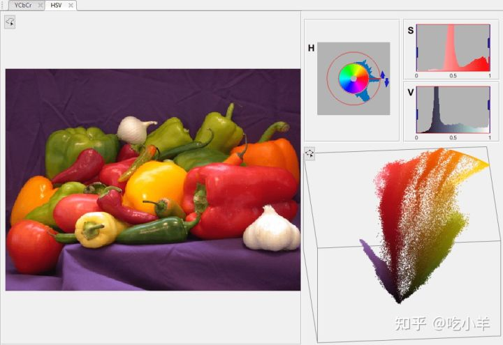
与之前的迭代一样，您可以使用所有相同的技术：自动阈值设置和颜色分量控件的交互使用，包括点云。当您使用颜色控件时，您可以看到正在进行的分割。在带有H控件的窗格中，通过一次单击并拖动一个箭头来更改色调范围。尝试使用控件，直到您将背景与前景完全分开。您可以在使用工具箱功能（例如形态运算符）创建蒙版图像后清除小瑕疵。
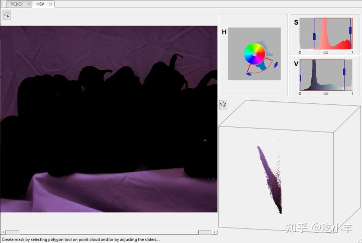
使用颜色阈值器应用程序创建蒙版图像
示例的这一部分展示了如何在分割后创建蒙版图像。您还可以获得分割图像和用于创建蒙版图像的 MATLAB 代码。
由于该示例分割了背景（紫色布料）而不是前景对象（辣椒），因此请单击“反转蒙版”来交换前景和背景。
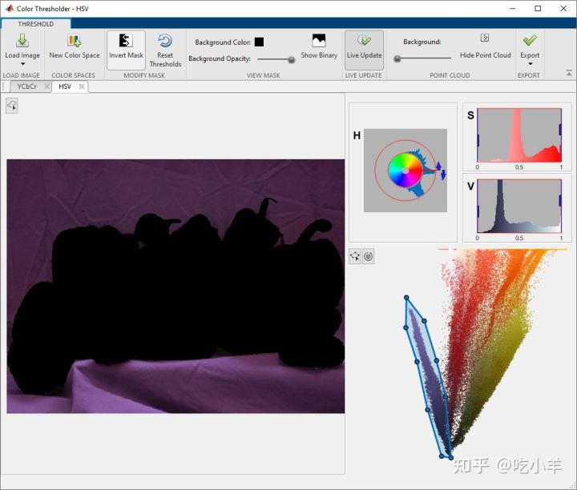
通过单击应用程序工具条上的“显示二进制”查看您创建的二进制蒙版图像。
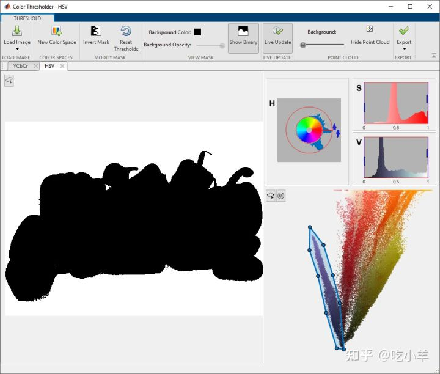
将蒙版图像保存在工作区中。在蒙版工具条上，单击导出并选择 导出图像。
在“导出到工作区”对话框中，为二进制遮罩图像指定变量名称。您还可以保存原始输入 RGB 图像和原始图像的分割版本。
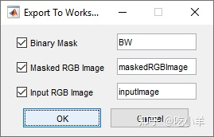
要保存重新创建分割所需的 MATLAB 代码，请点击导出并选择导出函数。颜色阈值器打开 MATLAB 编辑器显示分割代码。要保存代码，请单击MATLAB 编辑器工具条上的保存。您可以运行此代码，将 RGB 图像传递给它，以编程方式创建相同的蒙版图像。
function [BW,maskedRGBImage] = createMask(RGB)
%createMask Threshold RGB image using auto-generated code from colorThresholder app.
% [BW,MASKEDRGBIMAGE] = createMask(RGB) thresholds image RGB using
% auto-generated code from the colorThresholder App. The colorspace and
% minimum/maximum values for each channel of the colorspace were set in the
% App and result in a binary mask BW and a composite image maskedRGBImage,
% which shows the original RGB image values under the mask BW.
% Auto-generated by colorThresholder app on 22-Jun-2016
%------------------------------------------------------
% Convert RGB image to chosen color space
I = rgb2hsv(RGB);
% Define thresholds for channel 1 based on histogram settings
channel1Min = 0.713;
channel1Max = 0.911;
% Define thresholds for channel 2 based on histogram settings
channel2Min = 0.049;
channel2Max = 0.971;
% Define thresholds for channel 3 based on histogram settings
channel3Min = 0.005;
channel3Max = 1.000;
% Create mask based on chosen histogram thresholds
sliderBW = (I(:,:,1) ≥ channel1Min ) & (I(:,:,1) ≤ channel1Max) & ...
(I(:,:,2) ≥ channel2Min ) & (I(:,:,2) ≤ channel2Max) & ...
(I(:,:,3) ≥ channel3Min ) & (I(:,:,3) ≤ channel3Max);
BW = sliderBW;
% Invert mask
BW = ~BW;
% Initialize output masked image based on input image.
maskedRGBImage = RGB;
% Set background pixels where BW is false to zero.
maskedRGBImage(repmat(~BW,[1 1 3])) = 0;
end
======================================================================
我的测试结果及程序
下面是我测试的代码：

注：本文根据MATLAB官网内容修改而成。